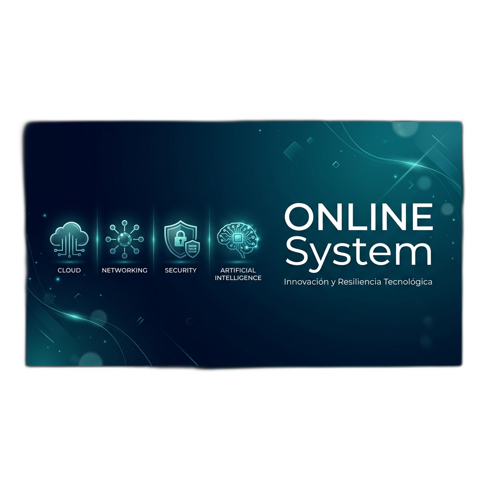

Escaneo
Captura rápida del código PDF417 de la cédula.


Tecnología que impulsa futuro
Plataforma integral de control de visitantes, seguridad perimetral y trazabilidad operativa 100% Offline.
Sistema autónomo que opera en red local sin necesidad de internet. Base de datos propia, escáner móvil y modo kiosco de seguridad.


El guardia usa su celular Samsung como escáner. Los datos se envían al PC principal vía Wi-Fi local en tiempo real.
Captura rápida del código PDF417 de la cédula.
Sincronización instantánea vía red Wi-Fi local.
Carga automática de datos en la estación de guardia.
Panel con KPIs de seguridad, gráficos de frecuencia y métricas operativas actualizadas al segundo.